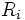
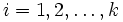
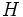
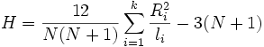
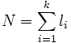
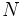
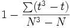
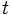

mit
mit  Freiheitsgraden.
Freiheitsgraden.
Die Vorgehensweise unten basiert auf NAG-Algorithmen.

für

wird berechnet mit:
, wobei
, d.h.,
die Gesamtanzahl der Beobachtungen ist. Gibt es verbundene Werte, wird durch Teilen von
korrigiert, wobei
die Anzahl der verbundenen Werte in einer Gruppe ist und die Summe die Gesamtheit der verbundenen Gruppen.Das Signifikanzniveau basiert auf der Verteilung mit Freiheitsgraden.
Weitere Einzelheiten zu dem Algorithmus finden Sie unter nag_kruskal_wallis_test (g08afc).